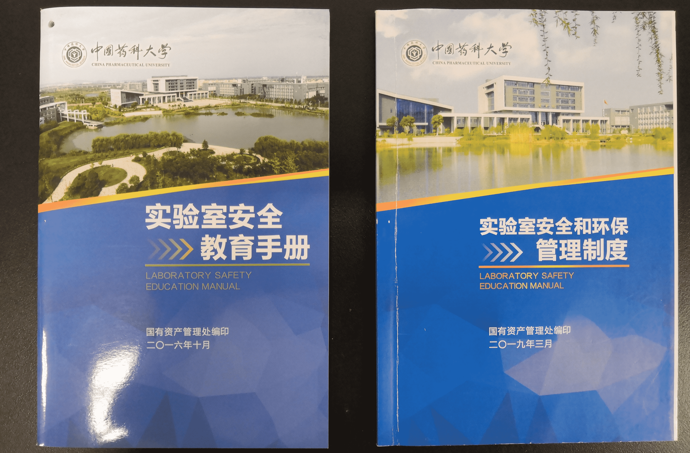
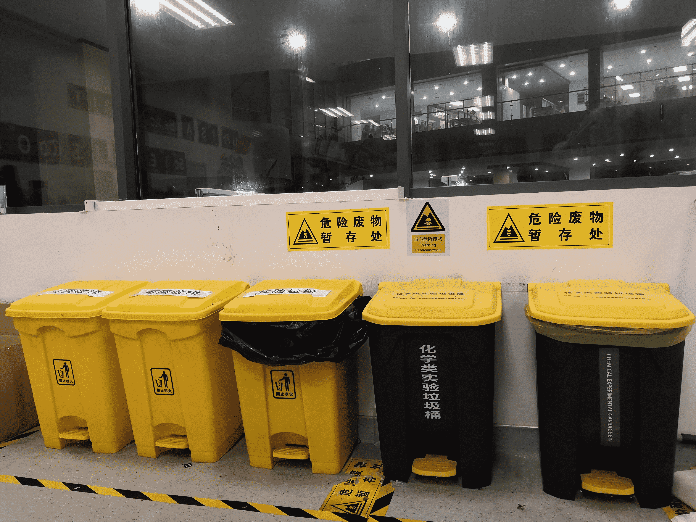

Safety is one of the most noteworthy issues in experiments. Therefore, CPU_CHINA 2021 has implemented several laboratory criteria to ensure the biosafety and biosecurity of our experiments.
This year, all of our experiments are performed in BSL-1 laboratory. Before entering the laboratory, we are required to pass laboratory safety knowledge examination in order to establish basic cognitions on risk assessment, safety equipment, microbiological knowledge, emergency procedures and so forth. Also, before conducting experiments, we need to accept indispensable laboratory training regarding specific reagent and instrument usage. In this way, the general laboratory knowledge, common cautions and safety awareness were educated.
In addition, during the experiments, we strictly obey related laboratory regulations and experiment protocols. All team members are demanded to wear gloves, masks and lab coats. Eating and drinking in the lab are forbidden.

At the same time, given that we need to carry out many microbiological experiments, aseptic procedures should be standardized:
After experiments, with regard to the treatment of the waste , all waste bins or tanks are grouped into categories and placed in specified locations. The waste will be disposed of or recycled according to corresponding regulations.
Considering biosafety, we choose Escherichia coli DH5alpha and Pichia pastoris GS115 as our chassis, as these organisms are categorized in risk group 1 and the iDEC white list, thus they are non-pathologic to human beings. The wild type MnP is derived from Phanerochaete chrysosporium belonging to risk group 1 organisms; and its corresponding mutants engineered by us do not possess new catalytic machinery. Therefore, handling and disposing these organisms and enzymes under strict experimental specification will not cause harm to the health of researchers and the environment.
Meanwhile, although being reprogrammed, the introduced coding sequences will not confer our engineered strains a strengthened environmental adaptive capacity and make them become more advantageous in species competition. Thus, these engineered strains post little risk to the environment. Despite all this, in view of standard aseptic operation that we undertake, the risk of engineered strains escaping or leaking into the environment is minimized.